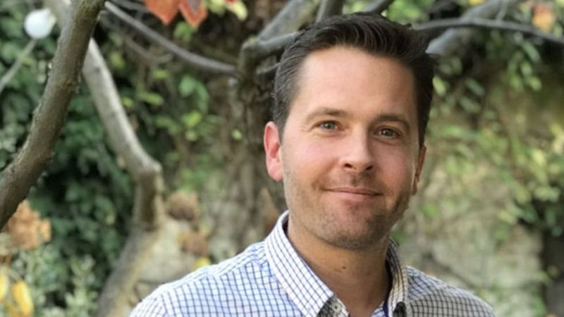
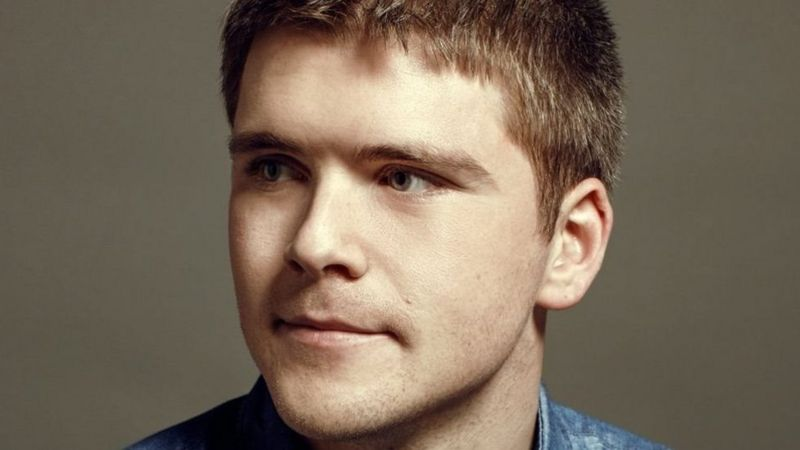
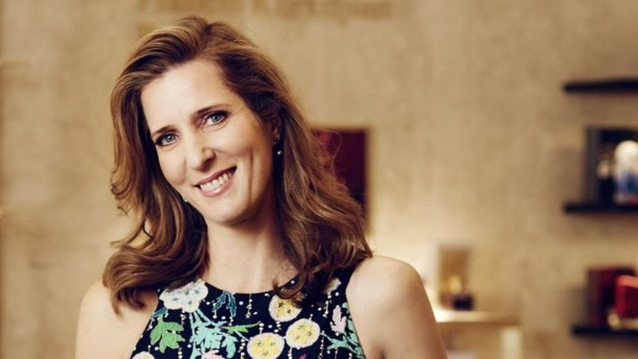

قصص ملهمه

قبل أعوام قليلة، أدرك "أندرو هَنتر" - وهو منهمكٌ في إدارة نشاطه التجاري الذي
كان لا يزال ناشئاً وقتذاك - أن ثمة ما يسوء بشأن حالته الصحية.
فالرجل الذي شارك في ذلك الوقت في تأسيس موقع "أدزونا" الإلكتروني للبحث عن وظائف؛ فوجئ أنه بدأ في فقدان الوزن بسرعة كبيرة، كما أصابه سعالٌ لم يفارقه.

لا يبدو جون كوليسون مرتاحا تماما لشهرته المثيرة للإعجاب، فهو الملياردير العصامي الأصغر سنا في العالم.
لا يتجاوز عمر جون كوليسون السابعة والعشرين، ومع ذلك فهو يبدو قائدا واثقا تماما في نفسه في مجال الأعمال، ومتميزا في مجال التواصل.
لكن إذا سألته عن مدى ثرائه، ستشعر بارتباكه. ويقول جون الأيرلندي الأصل: "الناس يسألون هذا السؤال كثيرا، وأشعر كأنهم يريدون دائما إجابة مثيرة حقا، وليس لدي إجابة لهم".
ويضيف: "الناس يسألون 'كيف تغيرت حياتك؟'، ويريدون لي أن أمارس هواية جديدة تماما، مثل جمع ما يعرف بـ "بيض الفابرجيه" (وهو أشكال فنية بيضاوية مرصعة بالجواهر يقتنيها الأثرياء)، أو خوض سباق اليخوت".
ا تبدو الصفات التي يتسم بها هذا الرجل ذو الابتسامة العريضة، من دماثةٍ وقدرة على الحديث اللطيف، وسخاءٍ في منح الوقت والمشورة لمن حوله، كالصفات التي ترتبط عادةً بـ "التنين".
فعندما يظهر "جو ميمران"، في النسخة الكندية من البرنامج التليفزيوني البريطاني ذائع الصيت "عرين التنانين"، الذي يُفسح المجال لأصحاب المشاريع الناشئة لعرض أفكارهم ومشروعاتهم، لا يبدو أنه من تلك الشخصيات التي "تنفث النيران من أفواهها" في وجهك، لتقوض بذلك أحلامك وأفكارك التي تعرضها عليها.
ربما يعود ذلك إلى أن هذا الرجل، وهو مغربي الأصل، يتذكر طبيعة الشعور الذي ينتاب المرء في مثل هذه المواقف، وخاصة عندما يراك قادماً إليه مُفعماً بالأمل لكي تعرض عليه فكرتك التي تحبها.
فرغم أن ميمران (65 عاماً) - الذي هاجر من مسقط رأسه في المغرب إلى بلاد الغرب وعكف طيلة حياته على العمل في مجال الأزياء - يُعرف بكونه المحرك الأساسي وراء ظهور علاماتٍ تجاريةٍ كبرى مثل "جو فريش" و"كلابْ موناكو"، فإن مسيرته المهنية حفلت بالانتصارات والانتكاسات سواءٌ بسواء.

شراء أدوات التجميل من المتجر الخاص بتلك المنتجات يعتبر أمرا يبعث على الضجر بالنسبة للكثير من النساء، وليست سيدة الأعمال جو هورغان استثناء.
تقول هورغان، التي تبلغ من العمر الآن 49 عاما، إنها لم تكن ترتاح لتعدد أقسام بيع أدوات ومساحيق التجميل وفقا لكل علامة تجارية مختلفة، حيث تروج نساء من خلف طاولات منفصلة لمنتجات هذه العلامة أو تلك، في كل قسم على حدة.
وإذا كانت الزائرة تود شراء منتجات لأسماء تجارية مختلفة، عليها أن تمشي من قسم إلى آخر، "وهو شعور يبعث على الضجر"، حسبما تقول هورغان.
لكنها بدلا من الضجر من رحلة شراء أدوات التجميل والوقوف بعجز حيال ذلك، أدركت هورغان في عام 1997 أنه يمكنها توفير فرصة بديلة، وافتتحت متجرا فاخرا لمنتجات التجميل، لبيع عدد كبير من العلامات التجارية المختلفة في مكان واحد، حسب جودة المنتجات، و طلب الزبائن.